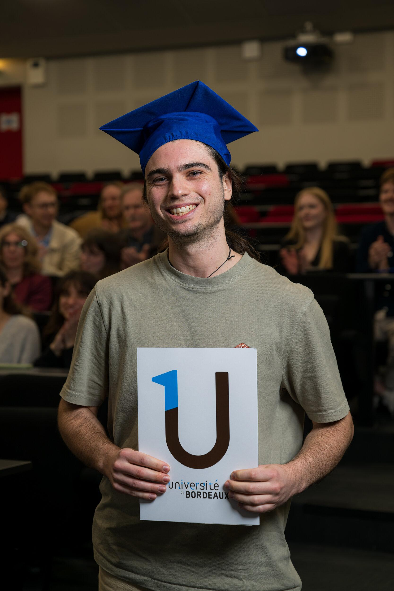

About Me
Je m'appelle Léandre et je suis étudiant en physique à l'université de Bordeaux
Sur ce site vous trouverez mes passions, mes projets et d'autres trucs dont je suis fier.
L'une de mes passions est l'astronomie amateure. J'observe actuellement avec un téléscope newtonien 203/1200 sur une monture Dobson (c'est un Omegon Advanced pour être exact). J'aimerais beaucoup me lancer dans l'astrophotographie mais c'est un hobby assez cher et mon téléscope est relativement inadapté :/. Pour le moment, je prends des photos de la Lune et du Soleil avec mon téléphone placé derrière l'oculaire. C'est très impropre je sais mais j'ai des résultats assez correct. Mes plus belles photos sont disponibles dans la gallerie.
Mon emoji préféré c'est 🤔
J'utilise \epsilon, \rho et \varphi